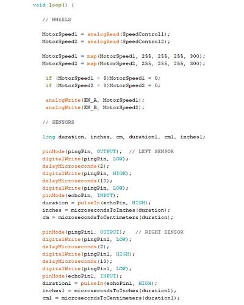
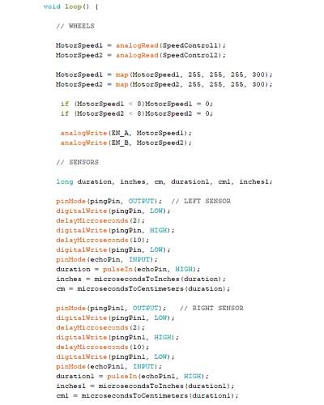

Interactive Project
This was the last group project for Semester 2 and involved working in groups to create an interactive piece targeted at our chosen group for the transmedia 2019 exhibition. Our group chose school groups as our target audience and we created an interactive robot and paired it with an Augmented reality app, that allowed users to scan the robot using the app and transform it into a 3D model on their phones. For this project I was the developer and engineer of the physical robot.
Skills Required
- Robotics
- Arduino Programming
- Electronics
Time Taken: 6 weeks
Challenges Faced
One of the main challenges I faced within this project was that I did not know anything about the field of Robotics and I was also still new to development in general. I overcame this issue through managing my time thoroughly to practice programming the arduino and learning the code required to make the robot function. I used many online resources and the guidance of my development lecturer to overcome any of the issues that occured when programming the robot.
Planning and Research
The use of Trello and how I managed my time over the 6 weeks and my initial research into the different elements of the robot.
Time was very limited for this project as there were many subjects I had to learn in order to get a working prototype of the robot up and running by the time of the show. I created a time management sheet along with managing the development card of our team's Trello board in order to keep myself on track for the deadline.
For my research I looked into for the many elements our robot would need to be able to function. I looked at the best way for it to move and also how it could move without the need for a person to be controlling it. I also looked into other features for the robot such as the operating system. At first I thought the Raspberry Pi would be a better option but I later changed my mind to use the Arduino Uno because it is easier to programme and is not dragged down by an operating system.
Movement
To make the robot move, I wanted to use DC motors, combined with either wheels or tracks. For me, tracks look better but one of
the main issues using tracks is the robot will not turn as sharply as it may need to in some situations. With wheels,
it will make the robot turn much easier and they will also be easier to wire and program as the robot would only
require two motors to function.
I would also need a motor driver which would allow me to control and program the speed and direction of the motors.
Sensors
I also had to consider how the robot would keep itself from crashing and falling from surfaces since I wanted the
robot to drive itself instead of needed a remote control to direct it. I looked into using ultrasonic sensors which
would detect how the far robot was from an obstacle in front of it. Pairing this with the arduino, I could make the
move based on how far away the nearest obstacle is.
Another option would be to use a microphone and use loud sharp sounds such as clapping to make the robot change direction.
this option would be way more complex and cost a lot of money and time to get it all working.
Power
There were many components for the robot that needed power. As I had a 5V spare already I could have used that but after
looking at some online resources and researching into it, a 5V power supply would not support and power all of the
required components meaning the robot would not function correctly.
I thought a 9V power supply would be best as it would not overload any of the components and also provide enough
power to the robot. The power supply could then also be plugged into the arduino instead of the motor driver like the 5V
power supply would need.
Initial Prototypes
Creating a simple prototype to practice programming an Arduino board for the first time.
Sensor Prototype

To begin with, I built and designed a proximity alarm, using an untrasonic sensor along with LED lights and a buzzer.
the idea of this device would be to detect when an object or person was too close which would then trigger the buzzer
and make the LED lights blink.
The idea for this device was to practice programming an arduino board and to also demonstrate one of the basic uses
of an ultrasonic sensor.
Movement Prototype
The next stage of prototyping was to get the motors and the wheels working. I wrote a simple program to get the wheels to move forward. I had to solder the wires to the motors as one of the problems I faced were the wires kept falling off of the motors.
Development of Prototype
Creating a model of what the robot would look like and the combination of all the main components.
The next step I took was to build a model using a prototype chassis to create a model of all of the parts combined to demonstrate how the robot would look. One of the main problems I noticed with this model was that one senor may not be enough to stop the robot from crashing into things due to the untrasonic sensors being highly directional.
Final Outcome
The mk-2 working prototype of the robot using the custom 3D printed chassis and using two sensors.
 

For the final outcome, I combined my parts with the custom chassis and built a program which used two sensors to detect
how far in centimetres the robot was from. I used if statements to get the robot to reverse and turned whenever the
robot came within 10cm of an object in order to stop it from crashing into objects
The program I built for the robot was simple and there is room for improvement but demonstrates the robot being
able to self-drive itself around it's environment and being able to avoid contact with any objects around it.